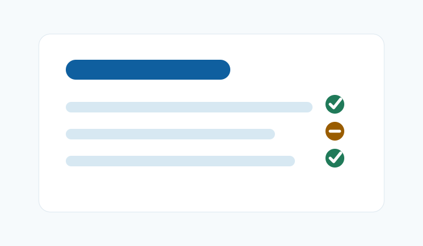
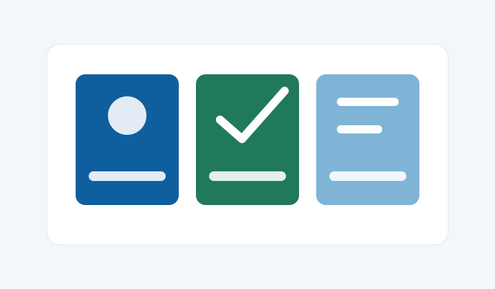
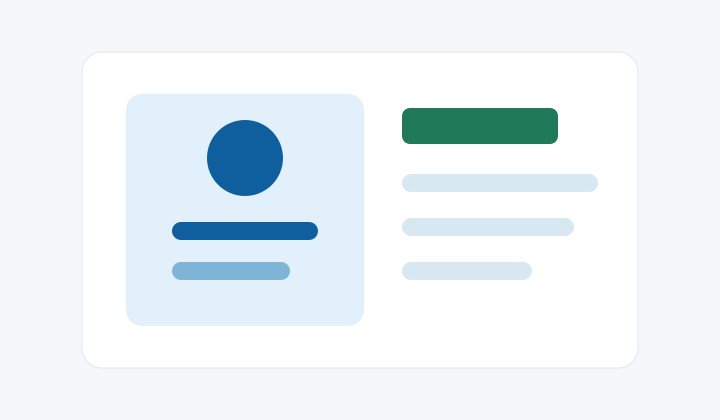
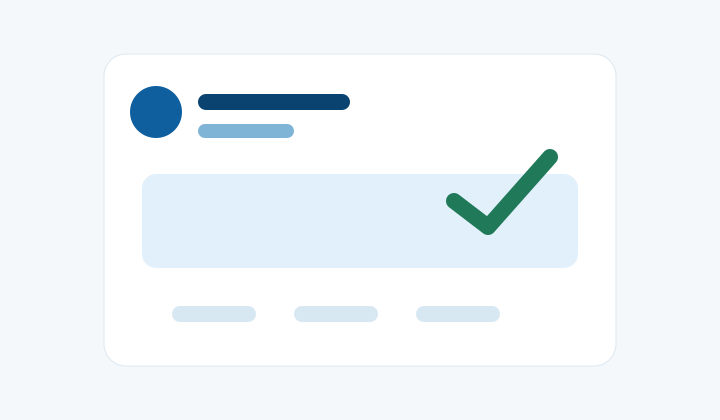

Google Ads
Google Ads
搜索广告
适合承接高意图关键词、询盘词、供应商词和解决方案词。
Managed Ads
面向外贸企业、工厂、跨境电商和创业项目，先明确想获得询盘、销售还是品牌触达，再评估 Google、Meta（含 Facebook 与 Instagram）或 X/Twitter 的投放准备。无需为了“多平台”同时开齐所有渠道。

Google、Meta 与 X 是不同的广告体系；Facebook 属于 Meta 产品体系，不应把 Meta 和 Facebook 当成两个互不相关的平台或两份默认套餐。以下是需求分流，不是固定投放配比或效果预测。
| 需求与入口 | 先核对什么 | 服务重点 |
|---|---|---|
| Google 开户代投 承接相关搜索或评估其他系列 | 实际搜索意图、地区与语言、页面对应、可承受预算和可靠转化。搜索广告不是所有 Google 广告的代称。 | 账户准备、广告系列与持续管理范围。 |
| Meta 多版位规划 协调 Facebook 与 Instagram | 素材能否适配不同版位、商务资产授权、衡量条件，以及后续由谁承接咨询。 | 跨版位素材、业务资产与衡量规划。 |
| Facebook 线索 改善主页、表单或私信承接 | 主页信息、筛选字段、消息入口、接收人员与真实询盘记录。这是 Meta 体系内的聚焦需求。 | 主页信息、线索筛选与客服交接。 |
| X/Twitter 广告 评估内容与活动推广 | 受众是否在该平台、内容与行动目标是否匹配、账户资格和落地页承接是否可行。 | 内容表达、活动推广与站外承接。 |
预算或素材不足时，可以先验证一条完整路径，再决定是否增加渠道。美国与香港分别确认真实市场、客户语言、币种和联系安排，不用查询语言替代地区判断，也不默认跨平台数据可直接相加。
以下包含广告系列、素材/版位及再营销策略，并不是相同层级的官方菜单。先判断产品、目标市场、预算和转化路径，再讨论组合；具体功能与资格以平台当前要求为准。
Google Ads
适合承接高意图关键词、询盘词、供应商词和解决方案词。

Google Ads适合品牌触达、内容曝光、访问人群回访和素材方向测试。
 Google Ads
Google Ads
适合产品演示、品牌介绍、案例说明和内容型获客。
 Google Ads
Google Ads
适合有商品 Feed 的跨境电商和独立站商品推广。
Google Ads
按销售或询盘目标评估多渠道投放；先确认素材与可靠转化。只有涉及商品推广的配置才核对相应商品数据，不把商品 Feed 当作所有项目的前提。
 Google / Meta
Google / Meta
适合再次触达访问过网站、浏览过产品或产生过互动的人群。

Meta Ads适合用图片、短视频、轮播和 Reels 素材测试受众反馈。

Facebook Ads适合收集咨询、报价、预约和 B2B 初步需求信息。

X/Twitter Ads适合内容分发、品牌曝光、活动传播和站外流量导入。
下列是合作确认方向，不表示每个项目自动包含全部工作。策略建议、账户执行、素材制作、网站开发与追踪实施要分别说明由谁完成，以及哪些另行确认费用。
围绕地区、语言、产品线、预算和转化目标，规划广告系列、广告组、受众和命名结构。
整理关键词分组、否定词方向、兴趣受众、再营销人群和测试优先级。
检查标题、描述、图片、视频、表单、政策页面和联系入口是否清楚一致。
按约定的复盘安排检查花费、搜索词或受众、素材及线索质量，记录证据和下一步，不承诺统一周频率或固定结果。
平台广告消耗、咨询或管理服务费、素材与开发等一次性工作分开列明。启动前确认付款对象、币种、预算控制、包含/不包含事项、交付和终止交接。具体金额与安排按实际需求书面确认，不在这里虚构通用报价或默认全部打包。
上线前可以用落地页验收清单核对网址、手机体验和信息送达，并用转化追踪指南区分按钮动作、真实询盘和合格线索。检查或咨询不等于已经替项目完成开发、埋点或审核。
PMax 不只用于商品推广，可参照 Google 的系列创建方式与询盘型业务实践分别核对条件。Google Ads 账户准备与已确认的合作说明见谷歌代投服务范围。
发送网站、业务类型、目标市场和预算范围，我们会先帮你梳理适合的广告类型、落地页问题和追踪准备。